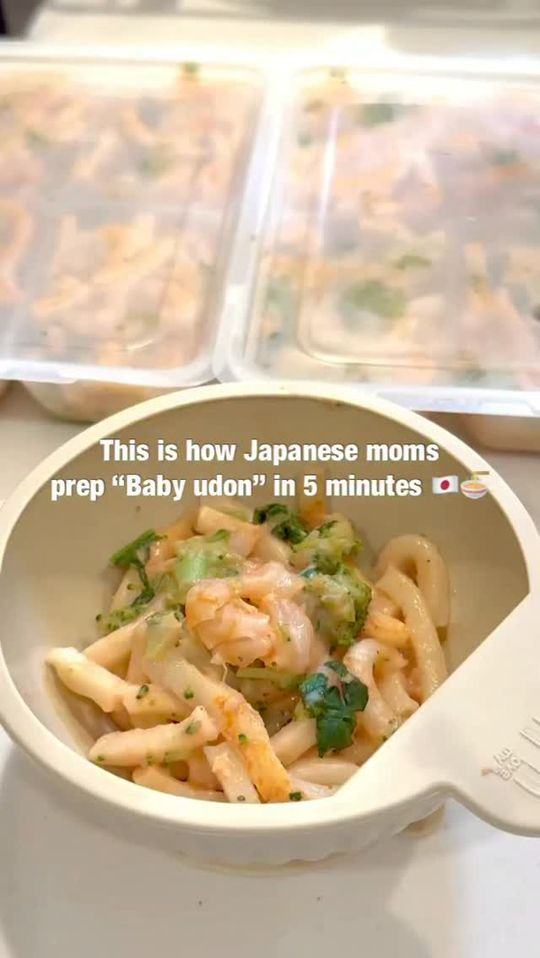

Shrimp Tomato Cream Udon

Ingredients
- Frozen udon — 2 portions
- Frozen shrimp — as much as you like
- Frozen broccoli — as much as you like
- Tomato paste — 2 tbsp
- Milk — 200ml
- Boiled spinach — as much as you like, optional
Steps
- Add the frozen udon, shrimp, frozen broccoli, and tomato paste to your rice cooker.
- Pour in the milk and mix lightly.
- Cook for 15 minutes, then stop the cooking cycle.
- Stir well and check that the shrimp is fully cooked.
- Add boiled spinach to taste and mix well.
- Cut the udon and shrimp into an appropriate size and texture for your baby.
Recipe text as written by @babymealsfreezer on Instagram. Open original